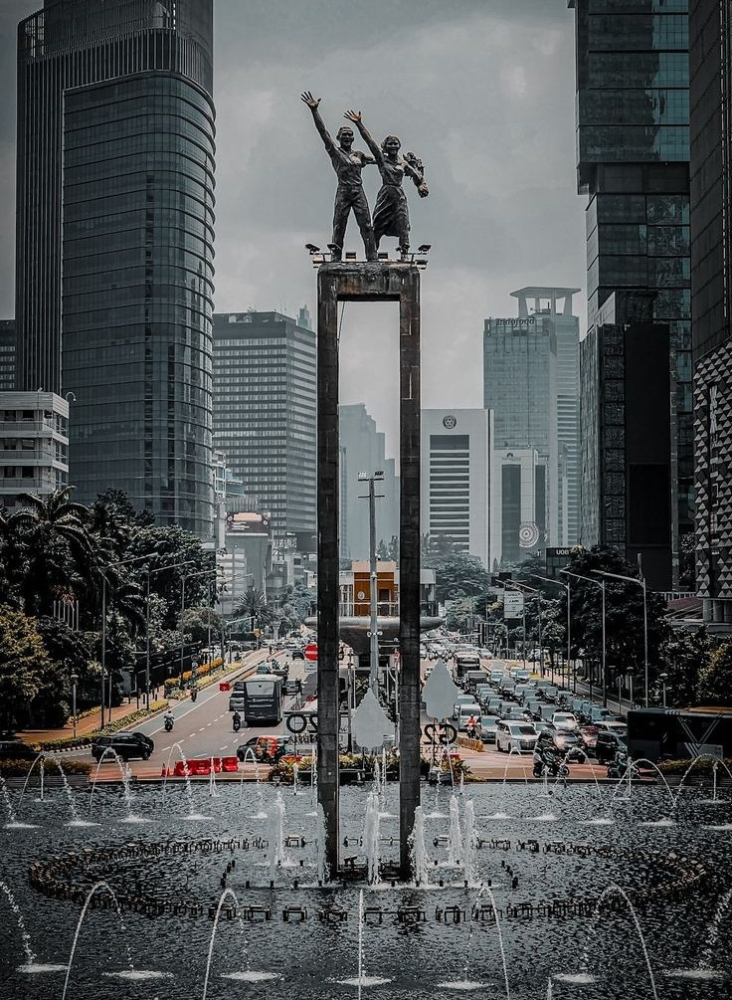

About DKI Jakarta
Capital City of Indonesia
Jakarta: The Heart of Indonesia, A Metropolis of Diversity and
Dynamism
Jakarta, officially known as the Special Capital Region of Jakarta
(DKI Jakarta), is the capital and largest city of Indonesia. Located on the northwest coast of
Java, Jakarta is a bustling metropolis that serves as the nation's center for economy, politics,
and culture. From its historical landmarks to its modern skyscrapers and diverse communities,
Jakarta offers a vibrant and dynamic experience.
A City of Historical Significance:
Jakarta has a long and rich history, dating back to the 4th century:
- Sunda Kelapa and Jayakarta: The city's history includes periods as Sunda Kelapa (a
port city) and Jayakarta before becoming Batavia under Dutch colonial rule.
- Batavia: During the Dutch colonial era, Jakarta was known as Batavia and served as
the capital of the Dutch East Indies.
- Independence and Modern Indonesia: Jakarta played a crucial role in Indonesia's
struggle for independence and became the capital of the newly independent nation.
- Historical Landmarks: Several historical landmarks, such as the National Monument
(Monas), Kota Tua (Old Town), and various museums, reflect Jakarta's rich history.
A Melting Pot of Cultures:
Jakarta is a melting pot of cultures, with people from all over
Indonesia and the world residing in the city:
- Diverse Ethnic Groups: Jakarta is home to people from various ethnic backgrounds,
including Javanese, Sundanese, Betawi (the indigenous people of Jakarta), Chinese, and many
others.
- Cultural Influences: The city's culture is influenced by various traditions,
languages, cuisines, and art forms.
- Cultural Events and Festivals: Various cultural events and festivals are held
throughout the year, showcasing Jakarta's diverse cultural heritage.
A Modern Metropolis:
Jakarta is a modern metropolis with a rapidly developing skyline:
- Economic and Business Center: Jakarta is the center of Indonesia's economy and
business activities, with numerous multinational companies and financial institutions
located in the city.
- Modern Infrastructure: The city has modern infrastructure, including transportation
systems, high-rise buildings, and shopping malls.
Economic Potential:
Jakarta's economy is driven by:
- Finance and Banking: Jakarta is the center of Indonesia's financial and banking
sector.
- Trade and Commerce: The city is a major hub for trade and commerce, both domestically
and internationally.
- Services and Tourism: The service sector, including tourism, also plays a significant
role in Jakarta's economy.
Jakarta: A City of History, Culture, and Modernity
Jakarta offers a unique and dynamic experience for visitors,
combining rich history, diverse cultures, and modern urban life. Here's a deeper look:
Historical Perspective
From Sunda Kelapa to Modern Jakarta: Jakarta's history spans centuries, from its
early days as a port city to its role as the capital of Indonesia.
Cultural Diversity
A Melting Pot of Ethnicities and Cultures: Jakarta's diverse population creates a
rich cultural tapestry, with influences from various ethnic groups across Indonesia.
Modern Urban Landscape
Economic and Business Hub: Jakarta is the center of Indonesia's economy and business
activities, with a modern skyline and bustling urban environment.
Jakarta Today
Jakarta continues to evolve as a global city, playing a crucial
role in Indonesia's development and offering a dynamic and diverse experience for its
residents and visitors.
